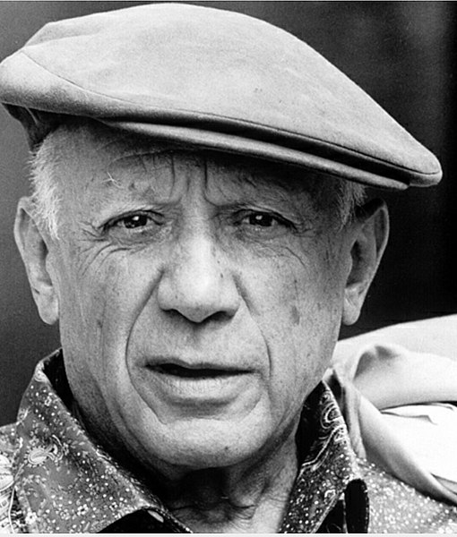

El ser humano nunca deja de aprender. De hecho, podríamos decir que es esto lo que ha permitido -y sigue permitiendo- nuestra evolución.
Sin embargo, hoy en día sigue habiendo recelos para los que desean buscar nuevos conocimientos de manera formal, luego de haber pasado cierta edad.
Si bien es cierto que comenzar un curso o estudios universitarios a los 20 años tiene una serie de ventajas ya conocidas por todo el mundo (como por ejemplo, energía y entusiasmo, tiempo, entre otros), no podemos negar que hacerlo unos años después también puede ser muy beneficioso desde el punto de vista personal. Cada cabeza es un mundo, sí, pero no se puede negar que a los 40 contamos con la madurez y la visión que nos permita sacar el máximo provecho a cada decisión tomada.
Para muchos se es "viejo" cuando tienes 40 y quieres apuntarte a un nuevo curso y se es un "viejo loco" si, además, es algo que no tiene que ver con lo que ha sido tu actividad durante más de 20 años.
